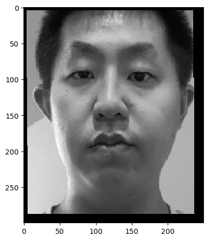

Project 3
Project Description
The core of this project is face morphing, which involves two main parts: warp of image shape and cross-dissolve of image color. To morph a source face to a destination face, I first need to find the affine transformation matrix that maps the source face shape to the destination face shape based on correspondence points I manually label. Next, I use the inverse of the affine matrix to map the source face color to the destination face color. The first three parts in this project focuses on face morphing implementation.
The last three parts expand beyond simple morphing from one face to another. Part 4 centers around finding the average face of a population based on public, well-labeled face data, part 5 is about extrapolation from the population average face, and in part 6 I implemented flexible parameters for shape warp and color cross-dissolve separately, adding some fun.
Part 1 Defining Correspondences
In this part, I defined 47 correspondence points on Me and Lillard face images using a public labeling tool, and I chose to compute the triangulation of the Me face image and the results are shown below. There are in total 88 triangles.
Me
Lillard
Part 2 Computing the "Mid-way Face"
This part lays the foundation for the entire project. In order to compute the mid-way face, there are four steps.
1) Find the average correspondence points, or the average shape. 2) Warp both Me and Lillard face images to the average shape by computing the affine transformation matrices. Each triangle between the source face image and the mid-way face image has a unique transformation matrix. 3) Use the inverse of the affine transformation matrices to interpolate color for each pixel inside a triangle. I used the “nearest neighbor” interpolation method to compute efficiently. 4) After morphing Me and Lillard separately into the mid-way face image, average their result images.
Me
Lillard
Our Mid-way Face
Part 2 implementation took me a long time to debug, since I am not used to (x, y) coordinates constantly flipping.
Part 3 The Morph Sequence
Part 3 builds on top of part 2. It smoothly morphs Me to Lillard in 50 image frames, with each frame being similar to the mid-way face. The only difference is the weight in steps 1 and 4 from above. As the Me face morphs to the Lillard face, weight increases in my implementation. My part 3 implementation only has one weight parameter, whereas I modified this implementation to control warp and cross-dissolve separately in part 6.

As shown above, it is obvious that there is a flaw where my hair left and right around frame 30 suddenly sticks out and then disappears around frame 40. I think that it is caused by imperfect correspondence points I defined in part 1. From the triangulation image in part 1, I only defined three correspondence points on the border of my hair. However, since my hair and lillard’s hair have a large difference, defining more correspondence points around the border of the hair shall be able to highlight this difference, thus solving the flaw in my morph sequence.
Part 4 The "Mean face" of a population
Also built on part 2, I compute the mean face of a population in part 4. The data comes from the FEI database, which contains 200 Brazilian individuals. There are many different versions of the data available on the public website. The version I am using contains two images for each individual, neutral and smiling. Each face image has the same dimension and all of them have correspondence points manually labeled.
The average face of the population is computed by the exact same steps described in part 2. The only difference is that the mid-way face contains only two source images whereas the population average face contains two hundred.
Population Average Neutral
Population Average Smiling
Example One Neutral
Example One Neutral Warped
Example One Smiling
Example One Smiling Warped
Example Two Neutral
Example Two Neutral Warped
Example Two Smiling
Example Two Smiling Warped
Me (resized and cropped)

Me Warped to Population Average
Population Average Warped to Me
Above are images of population averages, two individual examples of neutral and smiling, as well as Me warped to population average, and population average warped to Me.
In the two individual examples, the man’s face is larger whereas the women’s face is smaller compared to the population average. Therefore their warped faces are quite different from their originals.
In order to warp between Me and the population average, I had to resize and crop my original face image. The weird faces in those two images are caused by Me face including ears on the two sides, creating a false knowledge that my face is thinner than the population average.
Part 5 Caricatures: Extrapolating from the mean
This part is very interesting. Taking the framework from part 2, this time we change step 1, where I do not warp Me to the population average. Instead, we warp Me to Me plus the difference between Me and population average in each triangle multiplied by a constant. The reasoning behind it is extrapolation. (Me - population) means what separates me from the population average the most. Through multiplying the difference by a constant number and adding it to Me correspondence points, I am able to highlight the most different features.
For example, as we go from alpha = 0.5 to alpha = 1.0, my face gets thinner and thinner. It is because the population average face is thinner than Me face. In addition, my right eyebrow has a large curve that most people do not have. In extrapolation, this distinction is highlighted too.
Me (grey)

Alpha = 0.5
Alpha = 1
Part 6 Bells and Whistles
In a way, I have already changed Me face to a different ethnicity in part 4, from Chinese to Brazilian. Here, I reshow the morphed images by just the shape, just the color, and both. In implementation, I modified part 3, where I now incorporate two weight parameters in controlling warp and cross-dissolve.
I found something interesting: the color only image is the same as Population Average Warped to Me in part 4. The reason is that in my implementation in this part, I create two morphed images before averaging them according to color weight. When I generate the color only morph, the shape I am wrapping to is essentially Me face. Therefore morphing Me to Population Average using color only is the same as Population Average warped to Me.
Me
Population Average
Shape Only

Color Only
(Shape = 0.5, Color = 0.5)